방송통신산업기사 (2021-10-02 기출문제)
1과목: 디지털 전자회로
1. 다음 중 맥동 전압(Ripple Voltage)에 대한 설명으로 옳은 것은?
- 맥동이 클수록 필터 동작이 뛰어나다.
- 맥동률은 직류 출력 전압에 대한 맥동 전압의 비율이다.
- 전파 정류기는 반파 정류기보다 맥동이 커서 많이 사용된다.
- 맥동률이 높을수록 더 좋은 필터이며 커패시터 값이 커질수록 맥동률은 커진다.
(정답률: 알수없음)

2. 반파정류기의 직류출력전압이 20[V]일 때 맥동전압의 rms 값은?
- 24.2[V]
- 20.0[V]
- 9.6[V]
- 7.7[V]
(정답률: 알수없음)
3. 다음 중 정전압 안정화 회로에서 안정화 전원용으로 사용되는 소자는?
- 콘덴서
- 코일
- 제너다이오드
- FET
(정답률: 알수없음)
4. PNP와 NPN 트랜지스터를 조합하여 이루어진 Push-Pull 증폭회로를 무엇이라 하는가?
- 컴플리멘터리 SEPP 회로
- 위상반전회로
- OTL
- OCL
(정답률: 알수없음)
5. 다음 그림은 베이스 바이어스 회로이다. 동작점에서 VCE전압은? (단, 베이스에미터 전압 VBE=0.7[V]이다.)
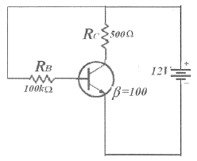
- 2.25[V]
- 6.35[V]
- 11.3[V]
- 12.0[V]
(정답률: 알수없음)
6. 다음 회로는 FET를 이용한 Voltage-series 궤환 증폭회로이다. 궤환이 없을 때 전압이득 AV는? (단, FET의 드레인 저항은 rd, 전달 컨덕턴스 gm, 증폭률 μ=gmrd)
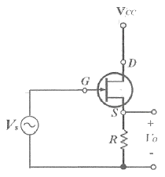
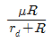
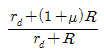
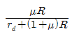
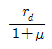
(정답률: 알수없음)
7. 차동증폭기에서 두 입력 전압이 각각 V1=50[μV], V2=-50[μV]일 때 출력전압은 얼마인가? (단, Ad는 차신호 이득이며, CMRR=100 이다)
- ∞
- 50Ad[μV]
- 100Ad[μV]
- 200Ad[μV]
(정답률: 알수없음)
8. 다음 중 연산 증폭회로의 응용인 비교기에 대한 설명으로 옳지 않은 것은?
- 두 개의 입력 전압과 하나의 출력 전압을 갖는다.
- 비반전전압이 반전전압보다 크면 높은 전압을 출력한다.
- 비반전전압이 반전전압보다 작으면 낮은 전압을 출력한다.
- 가성접지 때문에 커패시터 전류는 귀환저항을 통해 흐르고 전압을 발생시킨다.
(정답률: 알수없음)
9. 다음 중 푸시풀 전력증폭기에서 출력신호 파형의 찌그러짐이 작아지는 주된 이유는 무엇인가?
- 기수차 고조파 성분이 상쇄되기 때문이다.
- 우수차 고조파 성분이 상쇄되기 때문이다.
- 기수차 및 우수차 고조파 성분이 모두 상쇄되기 때문이다.
- 직류성분이 없어지기 때문이다.
(정답률: 알수없음)
10. 완충증폭기로 A급 증폭기를 많이 사용하는 이유는 무엇인가?
- 능률이 좋다.
- 조정이 쉽다.
- 기생진동이 없다.
- 안정된 증폭을 한다.
(정답률: 알수없음)
11. 15[kHz]까지 전송할 수 있는 PCM시스템에서 요구되는 최소 표본화 주파수는?
- 10[kHz]
- 20[kHz]
- 30[kHz]
- 40[kHz]
(정답률: 알수없음)
12. 다음 중 DSB-LC(DSB-TC) 변조 후에 발생되는 (피)변조 신호를 구성하는 성분이 아닌 것은?
- 반송파
- USB
- LSB
- FSB
(정답률: 알수없음)
13. 다음 중 아날로그 진폭 변호 방식의 종류가 아닌 것은?
- DSB-LC(DSB-TC)
- DSB-SC
- FM
- SSB
(정답률: 알수없음)
14. 진폭변조에서 신호파 xs(t)=4cos2πfst, 반송파 xc(t)=5cos2πfct로 주어질 때 피변조파 x(t)를 나타낸 것은?
- x(t)=4(1+0.8sin2πfst)cos2πfct
- x(t)=4(1+0.8cos2πfst)cos2πfct
- x(t)=5(1+0.8sin2πfst)cos2πfct
- x(t)=5(1+0.8cos2πfst)cos2πfct
(정답률: 알수없음)
15. 멀티바이브레이터에서 비안정, 단안정, 쌍안정의 구별은 무엇으로 결정되는가?
- 결합 회로의 구성에 따라
- 전원 전압의 크기에 따라
- 바이어스 전압의 크기에 따라
- 인덕터의 수에 따라
(정답률: 알수없음)
16. 다음 중 멀티바이브레이터에 대한 설명으로 잘못된 것은?
- 정궤환이 이루어지는 회로이다.
- 출력 파형은 고차의 고조파를 포함한다.
- 시정수는 입력 파형의 주기를 결정한다.
- 스위치 회로의 구형파 발생, 계수회로로 사용된다.
(정답률: 알수없음)
17. 다음 그림과 같은 Exclusive-OR 게이트를 이용하여 출력값이 ‘Y=B’인 Duffer로 활용하기 위한 입력결선 방법으로 가장 옳은 것은?
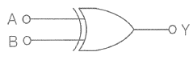
- 입력 A는 Open시킨다.
- 입력 A를 +5[V]로 고정한다.
- 입력 A를 0[V]로 고정한다.
- 입력 A를 출력 Y와 연결한다.
(정답률: 알수없음)
18. 다음 회로의 기능과 같은 논리 게이트는 무엇인가?
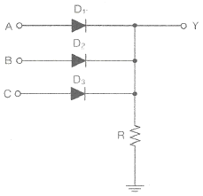
- AND
- OR
- EX-OR
- NAND
(정답률: 알수없음)
19. 두 입력을 비교하여 A＞B 이면 출력이 1 이고, A≤B이면 출력이 0이 되는 논리회로를 설계하고자 한다. 이 조건을 만족하는 논리식은?
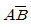
- AB
- A+B
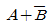
(정답률: 알수없음)
20. 2진 비교기의 입력이 X=1, Y=0일 때 비교기 출력 X＞Y와 X＜Y의 값을 바르게 나타낸 것은?
- 0, 0
- 0, 1
- 1, 1
- 1, 0
(정답률: 알수없음)
2과목: 방송통신 기기
21. 스튜디오 등 실내에서 음(Sound)를 내고 있다가 갑자기 음을 끊었을 때 음이 뚝 그치지 않고 차츰 감쇠해 가는 현상을 잔향이라 한다. 잔향시간은 음원을 끊고나서 음압레벨이 정상 상태의 값을 기준으로 몇[dB] 저하 될 때까지의 시간을 말하는가?
- 50[dB]
- 40[dB]
- 30[dB]
- 60[dB]
(정답률: 알수없음)
22. 디지털 지상파방송에 사용되는 시스템 중 연주소에서 사용되는 장비가 아닌 것은?
- Router
- MPEG Encoder
- RF Exciter
- Multiplexer
(정답률: 알수없음)
23. 다음 그림은 소출력 아날로그 헤테로다인 TV 중계기의 블럭도이다. 괄호에 들어갈 기능 블럭으로 알맞게 짝지어진 것은?
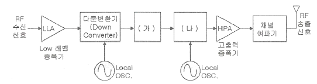
- (가) IF여파기 및 증폭기, (나) 업 변환기(Up Converter)
- (가) 복조기, (나) 변조기
- (가) 변조기, (나) 업 변환기(Up Converter)
- (가) IF여파기 및 증폭기, (나) 변조기
(정답률: 알수없음)
24. 방송국 송신소의 주요 설비가 아닌 것은?
- STL 수신 설비
- 송신 설비
- 제작 설비
- 제어, 감시 설비
(정답률: 알수없음)
25. 다음 중 전파에 관한 설명으로 틀린 것은?
- 전파는 진동방향과 수직방향으로 진행한다.
- 전파는 법률로 구속, 관리하는 3,000[GHz] 이하의 전자파다.
- 전파는 파장이 길수록 감쇠가 적다.
- 전파는 파장이 짧을수록 회절성이 좋아 장애물 통신에 유리하다.
(정답률: 알수없음)
26. AM 변조에서 피변조파의 총전력과 반송파 전력의 비는? (단, m은 변조도를 나타낸다.)
- 1+m2/2
- 1/2+m2
- 1+m2/4
- 1/4+m2
(정답률: 알수없음)
27. 다음 중 주파수에 의한 방송의 분류에 해당되지 않는 것은?
- 라디오 방송
- 단파 방송
- 초단파 방송
- 극초단파 방송
(정답률: 알수없음)
28. 주파수가 1,000[HZ], 진폭이 5[V]인 신호를 진폭이 10[V], 주파수가 939[kHz]인 반송파로 진폭변조하였다. 변조율은 얼마인가?
- 25[%]
- 50[%]
- 75[%]
- 100[%]
(정답률: 알수없음)
29. 라디오에서 주파수변조방식(FM)의 특징이 아닌 것은?
- 레벨 변동의 영향을 받는다.
- AM 방식보다 S/N 비가 좋다.
- 넓은 주파수 대역이 필요하다.
- AM 방식에 비해서 잡음이나 혼신에 강하다.
(정답률: 알수없음)
30. 다음 중 채널용량을 증대하기 위한 설명으로 틀린 것은?
- 대역폭을 크게 한다.
- 신호의 세기를 증가시킨다.
- 잡음의 크기를 줄인다.
- 신호대 잡음비(S/N)를 감소시킨다.
(정답률: 알수없음)
31. 다음 중 뉴스 취재 및 스튜디오 야외 녹화용으로 사용되며 기동성이 좋은 카메라는?
- 일체형 EFP 카메라
- 착탈형 ENG 카메라
- 스탠더드 카메라
- 일체형 ENG 카메라
(정답률: 알수없음)
32. 스피커 특성을 나타내는 파라미터에 대한 설명 중 옳지 않은 것은?
- 스피커에 1[W]의 전력이 공급될 때 1[m] 떨어진 거리에서 측정한 음압레벨(SPL)을 스피커 감도라 한다.
- 스피커에 1[W]의 전력이 공급될 때 1[m] 떨어진 거리에서 측정한 음향전력과 입력전력과의 비율을 스피커 효율이라 한다.
- 전력증폭기의 출력 임피던스를 스피커의 임피던스로 나눈 값을 댐핑팩터라 하고 스피커의 제동력을 나타낸다.
- 스피커에 인가되는 신호에 반응하는 정도를 순응도라 한다.
(정답률: 알수없음)
33. 케이블TV의 발달과 함께 무선케이블TV라는 새로운 개념의 전송방식이 활용되고 있는데 이러한 무선케이블TV 전송방식을 옳게 설명한 것은?
- 아파트지역 등 기반시설이 잘 갖추어져 있고 가입자가 밀집해 있다면 무선케이블TV의 효율성은 높다.
- 유선망에 비해 유지 보수 비용이 비싼게 단점이다.
- 무선케이블TV 방식으로는 MMDS방식과 LMDS방식이 있다.
- 양방향 서비스가 불가능하다.
(정답률: 알수없음)
34. 종합유선방송용 구내전송설비에 사용되는 분기기 및 분배기의 기준이 적합하지 않은 것은?
- 종합유선방송국에서 전송하는 주파수대의 신호를 분기 또는 분배 할 수 있을 것
- 임피던스의 변화 없이 신호를 분기 또는 분배할 수 있을 것
- 유휴분기단자 및 유휴분배단자는 사용회선에 영향을 미치지 아니하도록 75[Ω]으로 종단할 것
- 분배기는 입력신호 에너지를 4개 이상 분배할 수 있는 제품일 것
(정답률: 알수없음)
35. 아날로그 위성 방송의 송신기에서 FM 변조하기 전에 음성의 고주파 부분을 강조하는 것을 무엇이라 하는가?
- 대역변조
- 프리엠퍼시스
- 스켈치
- 저잡음 변환
(정답률: 알수없음)
36. 다음 중 DMB의 송신시스템에 적용되는 기술이 아닌 것은?
- 압축 기술
- 다중화 기술
- 디코더 기술
- 전송 기술
(정답률: 알수없음)
37. 다음 중 벡터스코프에 대한 설명 중 맞는 것은
- TV신호의 파형을 측정하는 오실로스코프이다.
- 컬러신호를 측정하지 못한다.
- 색차신호를 복조하여 그 위상과 진폭을 브라운관에 벡터도로 표시한다.
- TV신호의 휘도신호 주파수를 측정할 수 있다.
(정답률: 알수없음)
38. 다음 중 연주소에 대한 설명으로 옳은 것은?
- 연주소는 프로그램 제작 및 제작된 프로그램을 송신소나 방송위송국으로 송출하는 역할을 하는 곳이다.
- 연주소는 프로그램을 제작실로부터 전송받아서 일반 수신자에게 방송 전파를 송신하는 곳이다.
- 연주소는 방송국의 방송프로그램을 중계, 송신하여 방송국의 방송전파가 수신되지 않는 지역을 서비스하는 방송국이다.
- 연주소와 중계차와의 연결링크를 STL이라 한다.
(정답률: 알수없음)
39. 방송용 송신기에서 증폭기의 입력 전력이 3[mW]이고, 출력 전력이 3[W]일 때의 이 증폭기의 전력이득은 얼마가 되는가?
- 10[dBm]
- 20[dBm]
- 30[dBm]
- 40[dBm]
(정답률: 알수없음)
40. 수신 안테나로 수신한 여러 전파 중에서 원하는 방송의 전파를 골라내는 회로는?
- 동조회로
- 고주파 증폭회로
- 검파회로
- 저주파 증폭회로
(정답률: 알수없음)
3과목: 방송미디어 개론
41. 중파 라디오 방송의 사용 주파수대는?
- 526.5[kHz]~1,606.5[kHz]
- 30[MHz]~88[MHz]
- 3[GHz]~5[GHz]
- 30[kHz]~300[kHz]
(정답률: 알수없음)
42. 다음 중 가장 파장이 긴 대역은?
- VHF
- UHF
- MF
- HF
(정답률: 알수없음)
43. 다음 중 지상파 HDTV 방송파의 기존적인 전파형태는?
- 수직편파
- 수평편파
- 회절편파
- 원형편파
(정답률: 알수없음)
44. 다음 중 TV 부조정실의 임무와 거리가 먼 것은?
- 각종 드라마, 교양, 스포츠, 뉴스 등의 TV 프로그램들을 제작하여 녹화하거나 생방송을 하는 업무를 수행한다.
- 방송 프로그램을 제작함에 있어 정확한 시간관리, 최상의 품질상태 유지라는 원칙을 준수해야 한다.
- 부조정실의 통상적인 기술 스탭에는 기술감독, 비디오 엔지니어 등이 있으며 각자 프로그램 제작 시 조화를 이루어야 한다.
- 방송 프로그램 신호에 부가되어 송출되는 부가정보에 대한 제어 및 조정, 관리 및 감시업무를 수행한다.
(정답률: 알수없음)
45. 안테나로 전파를 수신하는 방송 수신기의 입력단에 일반적으로 위치하는 것으로 저잡음 증폭기를 지칭하는 용어는?
- SAW
- ADC
- LNA
- PAM
(정답률: 알수없음)
46. 150[MHz]인 반송파를 20[kHz]의 정현파로 FM변조한 경우 주파수 편이가 f=1[kFz]일 때 신호의 변조지수, 대역폭으로 옳은 것은?
- βf=0.⑤, BW≒40[kHz]
- βf=0.1, BW≒20[kHz]
- βf=0.2, BW≒40[kHz]
- βf=0.3, BW≒20[kHz]
(정답률: 알수없음)
47. 최고 주파수가 20,000[Hz]인 모노오디오를 10초간 저장하기 위해서 필요한 데이터량은? (단, 샘플링 주파수는 나이퀴스트 이론에 의한 최소주파수를 사용하며 A/D(아날로그/디지털) 변환기는 16비트이다.)
- 200[kB]
- 400[kB]
- 800[kB]
- 2[MB]
(정답률: 알수없음)
48. 스피커에서 나온 소리가 마이크로폰으로 수음되고 증폭되어 다시 스피커로 출력되는 일이 반복되는 발진현상은 무엇인가?
- 바이노럴 효과
- 근접효과
- 하울링
- 와우 플러터
(정답률: 알수없음)
49. 지상파 디지털 방송의 트징에서 수신전파가 일정값 이하가 되면 급격히 수신 상태가 열화되는 현상을 지칭하는 용어는?
- Capture Effect
- Cliff Effect
- Edge Effect
- Ground Effect
(정답률: 알수없음)
50. 지터(Jitter)에 대한 설명으로 가장 옳은 것은?
- 가청 주파수보다 높은 고주파 성분 발생으로 인한 에러
- 아날로그 파형을 양자화 비트로 표현하면서 발생하는 값의 차이
- 사운드에 원래 고주파 성분이었던 울림이 없어지고 저주파수의 방해 음이 발생한 것
- 디지털 신호의 전달 과정에서 일어나는 시간 축 상의 오차
(정답률: 알수없음)
51. 국내 지상파 디지털방송(DTV)방식에서 방송을 위해 사용하는 1채널당의 주파수 대역폭은?
- 6[MHz]
- 7[MHz]
- 8[MHz]
- 9[MHz]
(정답률: 알수없음)
52. 인터넷상에서 음성이나 동영상 등을 하나의 형태가 아닌 여러 개로 나누어 물 흐르듯이 연이어 보내 실시간으로 재생하는 기술은?
- 푸시(Push) 기술
- 스트리밍(Streaming) 기술
- 유니 캐스트(Unicast) 기술
- 멀티 캐스트(Multicast) 기술
(정답률: 알수없음)
53. 다음 중 실감방송 연구분야에 포함되지 않는 것은?
- 다시점 입체영상
- 홀로그래피
- JPEG
- 객체기반 3차원 오디오기술
(정답률: 알수없음)
54. 3차원 영상재현방식 중 안경식에 해당되지 않는 것은?
- 편광방식
- 셔터글라스방식
- 적청방식
- 렌티큘러방식
(정답률: 알수없음)
55. 정보통신시스템 중 전송계 장치가 아닌 것은?
- 통신제어 장치
- 변ㆍ복조장치
- 통신회선
- 영상편집장치
(정답률: 90%)
56. 다음 중 CATV선로 상의 전송손실을 보상하기 위하여 신호를 증폭하는 장치는?
- 중계증폭기
- 정합기
- 혼신방지기
- 충격방지기
(정답률: 알수없음)
57. 다음은 IPTV 서버의 프로토콜 구조이다. (가)에 적합한 프로토콜은?
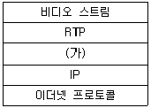
- UDP
- SNMP
- MAC
- H.264
(정답률: 알수없음)
58. IPTV에서 서비스 수신자격을 갖춘 가입자에게만 서비스를 제공하는 기능은?
- CAS
- SAS
- DAS
- TAS
(정답률: 알수없음)
59. CATV 중계회선에서 광섬유 케이블의 전송방식이 아닌 것은?
- 아날로그 전송방식
- 디지털 전송방식
- 파장분할 다중 전송방식
- 위상분할 다중방식
(정답률: 알수없음)
60. 다음 중 중계 전송용 CATV 시스템의 기능이 아닌 것은?
- 벽지 난시청대책용 CATV 시스템
- Master Antenna를 이용한 난시청 해소 시스템(MATV)
- 자주 방송 CATV 시스템
- 빌딩 공동 수신
(정답률: 알수없음)
4과목: 전자계산기 일반 및 방송설비기준
61. 컴퓨터 저장장치의 계층적 구조에 따라 용량이 작은 것부터 큰 것을 올바르게 나열된 것은? (단, 왼쪽이 가장 작다.)
- 레지스터→RAM→캐쉬→HDD
- 레지스터→캐쉬→HDD→RAM
- 레지스터→RAM→HDD→플래시
- 레지스터→캐쉬→RAM→HDD
(정답률: 알수없음)
62. 4진수 23.1034을 2진수로 변환한 것은?
- 1010.1100012
- 1011.0100112
- 1100.1110012
- 1101.1100112
(정답률: 알수없음)
63. 다음 중 10진수 13과 같지 않은 것은?
- 2진수 1101
- 5진수 23
- 8진수 15
- 16진수 C
(정답률: 알수없음)
64. 다음중 “1”과 “0”중에 “0”에 대응되는 비트만 클리어 되는 동작은?
- OR 명령
- AND 명령
- 배타적 OR 명령
- 시프트 명령
(정답률: 알수없음)
65. 컴퓨터 사용자가 컴퓨터의 본체 및 각 주변 장치를 가장 능률적이고 경제적으로 사용할 수 있도록 하는 프로그램은?
- Operating System
- Macro
- Compiler
- Loader
(정답률: 알수없음)
66. 다음 설명에 해당하는 것은 무엇인가?
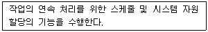
- Job Control Program
- Service Program
- Data Management Program
- Problem Processing Program
(정답률: 알수없음)
67. 다음은 SJF 스케줄링에 대한 설명이다. 틀린 것은?
- 선점형 스케줄링 기법이다.
- SJF 스케줄링을 변형시킨 방법이 SRT 스케줄링 기법이다.
- 처리해야 할 작업의 시간이 가장 적은 프로세서가 가장 먼저 CPU를 할당 받는다.
- 작업들이 시스템을 통과할 때 최소 평균 대기 시간을 제공한다.
(정답률: 알수없음)
68. 다음 중 소프트웨어에 대한 설명으로 틀린 것은?
- RC(Release Candidate)는 Microsoft에서 사용하는 소프트웨어 개발 단계로 정식판이 배포되기 직전의 단계로 볼 수 있다. 일반적으로 베타와 정식 배포판의 중간단계에 해당한다.
- 셰어웨어(Shareware)는 컴퓨터 소프트웨어의 마케팅 방식의 하나로 데모웨어 또는 평가 소프트웨어라고도 부른다.
- 소프트웨어의 구분 중 베타버전(Beta)은 제작회사 내에서 성능 시험을 위한 테스터나 개발자를 위한 버전이다.
- 번들(Bundle) 프로그램은 컴퓨터 시스템이나 프로그램을 구입할 경우, 특정 제품과 함께 서비스로 제공되는 부가 프로그램을 의미한다.
(정답률: 알수없음)
69. 다음 중 마이크로프로세서의 연산단위가 아닌 것은?
- 8bit
- 16bit
- 24bit
- 32bit
(정답률: 알수없음)
70. 데이지 체인(Daisy Chain)이란 연속적으로 연결되어 있는 하드웨어 장치들의 구성을 지칭한다. 다음 중 Daisy Chain 제어 방식에 대한 설명으로 옳은 것은?
- 고속 I/O 장치와 메모리간 CPU와 직접 데이터 교환
- 속도가 느린 I/O 장치와 프로그램에 의한 데이터 교환
- CPU가 여러 개의 I/O 장치와의 전송 방식
- 인터럽트를 발생하는 장치들을 직렬로 연결하는 운선순위 제어 방식
(정답률: 알수없음)
71. 다음 방송용어의 정의 중 전문편성에 해당하는 것은?
- 보도ㆍ교양ㆍ오락 등 다양한 방송 분야 상호간에 조화를 이루도록 방송 프로그램을 편성하는 것
- 특정 방송 분야의 방송프로그램을 전문적으로 편성 하는 것
- 방송되는 사항의 종류ㆍ내용ㆍ분량ㆍ시각ㆍ배열을 정하는 것
- 보도ㆍ교양ㆍ오락 등으로 방송프로그램의 영역을 분류한 것
(정답률: 알수없음)
72. 방송통신위원회가 방송사업자 및 방송채널사용사업자에게 재허가 또는 재승인 할 경우 심사사항이 아닌 것은?
- 방송통신위원회의 방송평가
- 지역사회발전에 이바지한 정도
- 시청자위원회의 방송프로그램 평가
- 방송중지명령에 대한 이행 사례
(정답률: 알수없음)
73. 지상파 방송사업을 하고자 하는 자는 어느 기관에게 방송국 허가를 받아야 하는가?
- 고용노동부
- 국립전파연구원
- 문화체육관광부
- 방송통신위원회
(정답률: 알수없음)
74. 과학기술정보통신부장관 또는 방송통신위원회가 방송사업의 허가 및 승인을 할 때 심사사항이 아닌 것은?
- 방송의 객관성 및 당위성
- 재정 및 기술적 능력
- 방송의 공정성 실현 가능성
- 방송프로그램의 기획, 편성 및 제작 계획의 적절성
(정답률: 알수없음)
75. 방송내용의 공공성 및 공정성을 보장하고 정보통신에서의 건전한 문화를 창달하며 정보통신의 올바른 이용환경 조성을 위하여 독립적으로 수행하는 기관은?
- 한국방송기술인연합회
- 방송통신심의위원회
- 방송윤리심의위원회
- 한국방송공사
(정답률: 알수없음)
76. 다음 중 중계유선방송에서 영상반송파의 신호레벨의 기준 단위는?
- [dBpV]
- [dBnV]
- [dBμV]
- [dBmV]
(정답률: 알수없음)
77. 우리나라 지상파 디지털 텔레비전방송 규격 중 음성신호의 부호화 방식은?
- MPEG-2
- AC-3(돌비 디지털방식)
- JPEG
- DVS
(정답률: 알수없음)
78. 다음 중 구내전송선로설비에 사용되는 설비에 해당되지 않는 것은?
- 분기기 및 분배기
- 동축케이블
- 증폭기
- 주파수 측정기
(정답률: 알수없음)
79. 중계유선방송사업자가 디지털유선방송용으로 우선 사용할 수 있는 주파수대역은 무엇인가?
- 5.75[MHz]부터 41.75[MHz] 또는 5.75[MHz]부터 65[MHz]까지
- 88[MHz]부터 108[MHz]
- 216[MHz]부터 276[MHz]
- 276[MHz]부터 750[MHz] 또는 324[MHz]부터 750[MHz]까지
(정답률: 알수없음)
80. 다음 중 인터넷 멀티미디어 방송사업자에 대한 허가취소를 할 수 있는 경우는/
- 허가를 받은 날부터 1년 이내에 사업을 개시하지 아니하거나 1년이상 계속하여 휴업한 때
- 겸영금지 등 해당사항의 시정에 대한 시정명령을 이행하지 아니한 때
- 외국인 주식소유 제한 등 시정에 대한 시정명령을 이행하지아니한 때
- 거짓이나 그 박의 부정한 방법으로 과학기술정보통신부장관의 허가를 받은 때
(정답률: 알수없음)